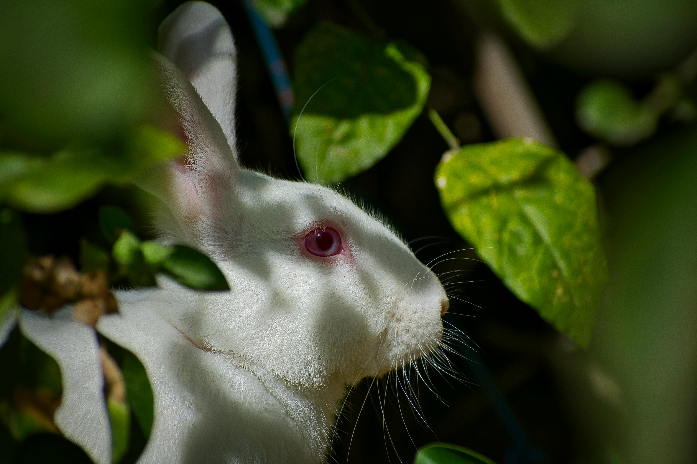

FROM OUR FAMILY TO YOURS
Spreading Love, One Hop at a Time.

Hop Into Something New!
Experience the charm of our farm, where new offerings are always hopping in. Explore your favorites, from adorable purebred bunnies and premium rabbit manure to ethically-produced fur and handcrafted rabbit care essentials.